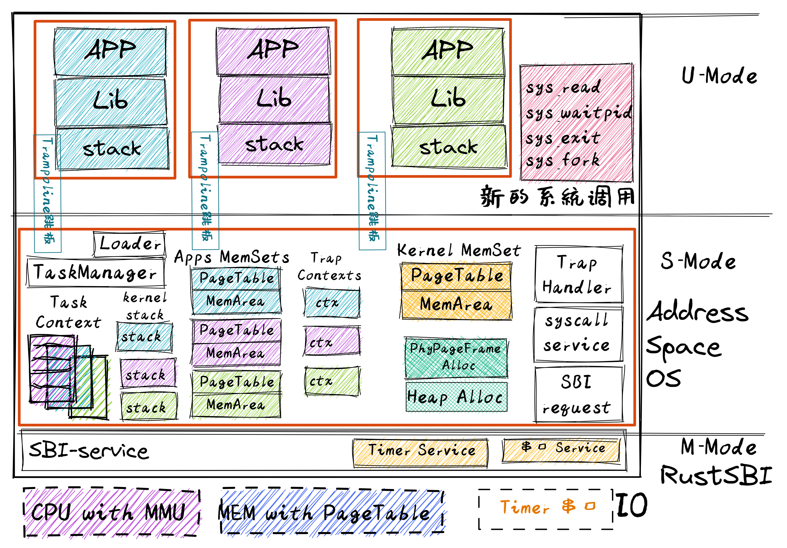
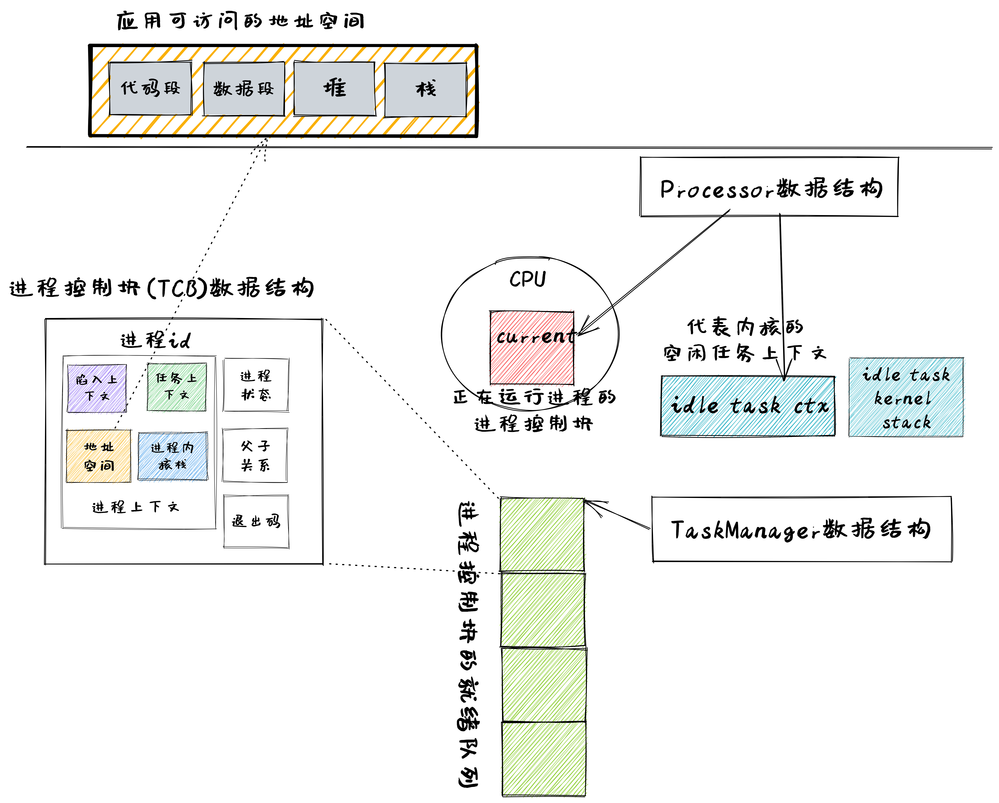

引言#
本章导读#
在正式开始这一章的介绍之前，我们可以看到：在前面的章节中基本涵盖了一个功能相对完善的操作系统内核所需的核心硬件机制：中断与异常、特权级、页表，而且一个一个逐步进化的远古生物操作系统内核让应用程序在开发和运行方面也越来越便捷和安全了。但开发者的需求是无穷的，开发者希望能够在计算机上有更多的动态交互和控制能力，比如在操作系统启动后，能灵活选择执行某个程序。但我们目前实现的这些操作系统还无法做到，这说明操作系统还缺少对应用程序动态执行的灵活性和交互性的支持！
到目前为止，操作系统启动后，能运行完它管理所有的应用程序。但在整个执行过程中，应用程序是被动地被操作系统加载运行，开发者与操作系统之间没有交互，开发者与应用程序之间没有交互，应用程序不能控制其它应用的执行。这使得开发者不能灵活地选择执行某个程序。为了方便开发者灵活执行程序，本章要完成的操作系统的核心目标是： 让开发者能够控制程序的运行 。
在前面的章节中，随着应用的需求逐渐变得复杂，作为其执行环境的操作系统内核也需要在硬件提供的相关机制的支持之下努力为应用提供更多强大、易用且安全的抽象。让我们先来简单回顾一下：
第一章《RV64 裸机应用》中，由于我们从始至终只需运行一个应用，这时我们的内核看起来只是一个 函数库 ，它会对应用的执行环境进行初始化，使得应用能够正确接入计算机的启动流程，同时我们还设置好函数调用栈使得应用可以正常进行 Rust 函数调用。此外，它还将 SBI 接口函数进行了封装使得应用更容易使用这些功能。
第二章《批处理系统》中，我们需要自动加载并执行一个固定序列内的多个应用，当一个应用出错或者正常退出之后则切换到下一个。为了让这个流程能够稳定进行而不至于被某个应用的错误所破坏，内核需要借助硬件提供的 特权级机制 将应用代码放在 U 特权级执行，并对它的行为进行限制，从而实现了内核的安全核心机制 – 控制隔离 。一旦应用出现错误或者请求一些只有内核才能提供的服务时，控制权会移交给内核并对该 Trap 进行处理。
第三章《多道程序与分时多任务》中，出于对提高计算机系统总体性能的需求，操作系统在一个应用执行一段时间之后，会暂停这个应用并切换另外一个应用去执行，等到以后的某个时刻，操作系统再切换回之前的应用继续执行。这样就实现了内核的核心机制 – 任务切换 。对于每个应用来说，它会认为自己始终独占一个 CPU ，不过这只是内核对 CPU 资源的恰当抽象给它带来的一种幻象。
第四章《地址空间》中，我们利用硬件的分页机制，实现了内核的安全核心机制 – 内存隔离 ，建立了一种经典的抽象 – 地址空间 ，让应用程序在操作系统管控的内存空间中执行，代替了先前应用程序对于物理内存的直接访问方式。这样做使得每个应用独占一个访存空间并与其他应用隔离起来，这是由内核通过设定应用的页表来保证不同应用的数据（应用间的共享数据除外）所在在物理内存区域互不相交。于是开发者在开发应用的时候无需顾及其他应用，整个系统的安全性也得到了一定保证。
目前为止，所有的应用都是在内核初始化阶段被一并加载到内存中的，之后也无法对应用的执行进行动态增删。从一般用户的角度来看，第四章和第二章的批处理系统似乎并没有什么不同。事实上，由于我们还没有充分发掘这些硬件机制和抽象概念的能力，应用的开发和使用仍然比较受限，且用户在应用运行过程中的动态控制能力不够强。其实用户可以与操作系统之间可以建立一个交互界面，在应用程序的执行过程中，让用户可以通过这个界面主动给操作系统发出请求，来创建并执行新的应用程序，暂停或停止应用程序的执行等。
注解
UNIX shell 的起源
“shell” 的名字和概念是从 UNIX 的前身 MULTICS 发展和继承过来的，应用程序可以通过 shell 程序来进行调用并被操作系统执行。Thompson shell 是历史上第一个 UNIX shell，在 1971 年由肯·汤普逊（Ken Thompson）写出了第一版并加入 UNIX 之中。Thompson shell 按照极简主义设计，语法非常简单，是一个简单的命令行解释器。它的许多特征影响了以后的操作系统命令行界面的发展。至 Version 7 Unix 之后，被 Bourne shell 取代。
注解
描述未来的 MULTICS 操作系统
在取得了 CTSS 操作系统的成功后，MIT 与 ARPA 在 1963 年 MAC 项目，其目标之一是设计和实现 CTSS 的后继操作系统。经过前期准备，在 1965 年，MIT 的 Fernando J. Corbató 教授联合贝尔实验室和通用电气公司联合启动了雄心勃勃的 MULTICS 操作系统项目。MULTICS 的目标是：改变人们使用计算机和计算机编程的方式，让人们能像使用电力或电话一样来方便地使用计算机的计算能力。类比于电力基础设施（Electric utility），MIT 的科学家想通过 MULTICS 构建未来的计算基础设施（Computer utility）。
为此开发小组对 GE645 计算机系统和 MULTICS 操作系统提出了一系列的非常先进的设计思路。同学们如果阅读了 “Introduction and Overview of the Multics System” 2 和 “Structure of the Multics Supervisor” 3 这两篇论文，可以发现 MULTICS 操作系统的设计思路即使放到二十一世纪的今天也不算过时。但相对较弱和进展缓慢的硬件，用于编写操作系统的 PL/I 高级语言的编译器严重滞后，操作系统各种功能带来的大型软件复杂性导致了 MULTICS 操作系统的开发困难重重。不过最终在 1969 年，MULTICS 操作系统开始提供服务，并一直持续到 2000 年，算得上是很长寿了。
这里我们只讲述 MULTICS 操作系统中与进程（Process）相关的一些设计思路。MULTICS 操作系统中的进程是指一个程序/作业的执行过程，如编译一个程序、产生一个文件等。每个进程在执行过程中所占的内存空间范围由 GE645 计算机中处理器指定的段（硬件机制）来描述和限制。操作系统通过处理器调度算法和调度分派机制来让不同的进程分时使用处理器，这样进程会有正在运行的运行态、准备运行的就绪态和等待条件满足的阻塞态这样不同的执行状态。在进程管理方面，有动态创建进程、阻塞进程和终止进程等不同的操作。每个子进程都是从某个进程（父进程）通过系统调用产生出来的。子进程可以共享父进程拥有的内存空间。用户进程通过系统调用获得操作系统的服务，不能直接访问操作系统的数据和代码，确保了操作系统的安全。
成为未来基石的 UNIX 操作系统
Ken Thompson 和 Dennis Ritchie 这一对贝尔实验室的黄金搭档，在 1969 年退出 MULTICS 操作系统开发工作后，并没有放弃操作系统的研发，而是决定重新开始。Ken Thompson 从小处着手，从一台老旧的 DEC PDP-7 计算机开始，将 MULTICS 操作系统的设计想法进行简化，并一个一个地实现，完成了第一版 UNIX 操作系统内核，并带有汇编器、编辑器和 shell 应用程序。这时的操作系统只是一个简单的单任务操作系统。它的 UNIX 取名是对 MULTICS 的一种玩笑回应。Dennis Ritchie具有 MULTICS 项目中的高级语言 PL/I 编译器方面的经验，他创建了小巧灵活的 C 语言和 C 编译器，UNIX 后续版本用 C 语言进行了重写。然后 C 语言和 UNIX 操作系统联手，影响了后续几乎所有的计算机和操作系统（Linux、MacOS、Windows…），成为了未来的基石。
这里我们关注 UNIX 操作系统中与进程（Process）相关的一些设计实现思路。简单地说，UNIX 操作系统中的进程实现充分吸取了 MULTICS 中关于进程的设计思想，实现了 fork exec wait exit 四个精巧的系统调用来支持对进程的灵活管理。父进程进程通过 fork 系统调用创建自身的副本（子进程）；称为“子进程”的副本可调用 exec 系统调用用另一个程序覆盖其内存空间，这样就可以执行新程序了；子进程执行完毕后，可通过调用 exit 系统调用来退出并通知父进程；父进程通过调用 wait 系统调用来等待子进程的退出。
一句话小结：MULTICS 操作系统的思想造就了 UNIX 操作系统，而 UNIX 操作系统引导了操作系统的发展历程，Linux 操作系统统治了当今世界。
于是，本章我们会开发一个用户 终端 (Terminal) 程序或称 命令行 应用（Command Line Application, 俗称 shell ），形成用户与操作系统进行交互的命令行界面（Command Line Interface），它就和我们今天常用的 OS 中的命令行应用（如 Linux 中的 bash，Windows 中的 CMD 等）没有什么不同：只需在其中输入命令即可启动或杀死应用，或者监控系统的运行状况。这自然是现代 OS 中不可缺少的一部分，并大大增加了系统的 可交互性 ，使得用户可以更加灵活地控制系统。
为了在用户态就可以借助操作系统的服务动态灵活地管理和控制应用的执行，我们需要在已有的 任务 抽象的基础上进一步扩展，形成新的抽象： 进程 ，并实现若干基于 进程 的强大系统调用。
创建 （Create）：父进程创建新的子进程。用户在 shell 中键入命令或用鼠标双击应用程序图标(这需要 GUI 界面，目前我们还没有实现)时，会调用操作系统服务来创建新进程，运行指定的程序。
销毁 （Destroy）：进程退出。进程会在运行完成后可自行退出，但还需要其他进程（如创建这些进程的父进程）来回收这些进程最后的资源，并销毁这些进程。
等待 （Wait）：父进程等待子进程退出。父进程等待子进程停止是很有用的，比如上面提到的收集子进程的退出信息，回收退出的子进程占用的剩余资源等。
信息 （Info）：获取进程的状态信息：操作系统也可提供有关进程的身份和状态等进程信息，例如进程的ID，进程的运行状态，进程的优先级等。
其他 （Other）：其他的进程控制服务。例如，让一个进程能够杀死另外一个进程，暂停进程（停止运行一段时间），恢复进程（继续运行）等。
有了上述灵活强大的进程管理功能，就可以进化出本章的白垩纪“伤齿龙” 1 操作系统了。
注解
任务和进程的关系与区别
第三章提到的 任务 和这里提到的 进程 有何关系和区别？ 这需要从二者对资源的占用和执行的过程这两个方面来进行分析。
相同点：站在一般用户和应用程序的角度看，任务和进程都表示运行的程序。站在操作系统的角度看，任务和进程都表示为一个程序的执行过程。二者都能够被操作系统打断并通过切换来分时占用 CPU 资源；都需要 地址空间 来放置代码和数据；都有从开始到结束运行这样的生命周期。
不同点：第三/四章提到的 任务 是这里提到的 进程 的初级阶段，任务还没进化到拥有更强大的动态变化功能：进程可以在运行的过程中，创建 子进程 、 用新的 程序 内容覆盖已有的 程序 内容。这种动态变化的功能可让程序在运行过程中动态使用更多的物理或虚拟的 资源 。
实践体验#
获取本章代码：
$ git clone https://github.com/rcore-os/rCore-Tutorial-v3.git
$ cd rCore-Tutorial-v3
$ git checkout ch5
在 qemu 模拟器上运行本章代码：
$ cd os
$ make run
待内核初始化完毕之后，将在屏幕上打印可用的应用列表并进入shell程序（以 K210 平台为例）：
[RustSBI output]
[kernel] Hello, world!
last 808 Physical Frames.
.text [0x80020000, 0x8002e000)
.rodata [0x8002e000, 0x80032000)
.data [0x80032000, 0x800c7000)
.bss [0x800c7000, 0x802d8000)
mapping .text section
mapping .rodata section
mapping .data section
mapping .bss section
mapping physical memory
remap_test passed!
after initproc!
/**** APPS ****
exit
fantastic_text
forktest
forktest2
forktest_simple
forktree
hello_world
initproc
matrix
sleep
sleep_simple
stack_overflow
user_shell
usertests
yield
**************/
Rust user shell
>>
其中 usertests 打包了很多应用，只要执行它就能够自动执行一系列应用。
只需输入应用的名称并回车即可在系统中执行该应用。如果输入错误的话可以使用退格键 (Backspace) 。以应用 exit 为例：
>> exit
I am the parent. Forking the child...
I am the child.
I am parent, fork a child pid 3
I am the parent, waiting now..
waitpid 3 ok.
exit pass.
Shell: Process 2 exited with code 0
>>
当应用执行完毕后，将继续回到shell程序的命令输入模式。
本章代码树#
伤齿龙操作系统 – ProcessOS的总体结构如下图所示：
{kind=link}
通过上图，大致可以看出伤齿龙操作系统 – ProcessOS在内部结构上没有特别大的改动，但把任务抽象进化成了进程抽象，其主要改动集中在进程管理的功能上，即通过提供新的系统调用服务：sys_fork(创建子进程)、sys_waitpid(等待子进程结束并回收子进程资源)、sys_exec（用新的应用内容覆盖当前进程，即达到执行新应用的目的）。为了让用户能够输入命令或执行程序的名字，ProcessOS还增加了一个 read 系统调用服务，这样用户通过操作系统的命令行接口 – 新添加的 shell 应用程序发出命令，来动态地执行各种新的应用，提高了用户与操作系统之间的交互能力。
而由于有了进程的新抽象，需要对已有任务控制块进行重构，ProcessOS中与进程相关的核心数据结构如下图所示：
{kind=link}
从上图可知，进程控制块 TaskControlBlock 包含与进程运行/切换/调度/地址空间相关的各种资源和信息。以前的任务管理器 TaskManager 分离为处理器管理结构 Processor 和新的 TaskManager 。 Processor 负责管理 CPU 上正在执行的任务和一些相关信息；而新的任务管理器 TaskManager 仅负责管理没在执行的所有任务，以及各种新的进程管理相关的系统调用服务。
位于 ch5 分支上的伤齿龙操作系统 - ProcessOS的源代码如下所示：
1./os/src
2Rust 28 Files 1848 Lines
3Assembly 3 Files 86 Lines
4
5├── bootloader
6│ └── rustsbi-qemu.bin
7├── LICENSE
8├── os
9│ ├── build.rs(修改：基于应用名的应用构建器)
10│ ├── Cargo.toml
11│ ├── Makefile
12│ └── src
13│ ├── config.rs
14│ ├── console.rs
15│ ├── entry.asm
16│ ├── lang_items.rs
17│ ├── link_app.S
18│ ├── linker-qemu.ld
19│ ├── loader.rs(修改：基于应用名的应用加载器)
20│ ├── main.rs(修改)
21│ ├── mm(修改：为了支持本章的系统调用对此模块做若干增强)
22│ │ ├── address.rs
23│ │ ├── frame_allocator.rs
24│ │ ├── heap_allocator.rs
25│ │ ├── memory_set.rs
26│ │ ├── mod.rs
27│ │ └── page_table.rs
28│ ├── sbi.rs
29│ ├── sync
30│ │ ├── mod.rs
31│ │ └── up.rs
32│ ├── syscall
33│ │ ├── fs.rs(修改：新增 sys_read)
34│ │ ├── mod.rs(修改：新的系统调用的分发处理)
35│ │ └── process.rs（修改：新增 sys_getpid/fork/exec/waitpid）
36│ ├── task
37│ │ ├── context.rs
38│ │ ├── manager.rs(新增：任务管理器，为上一章任务管理器功能的一部分)
39│ │ ├── mod.rs(修改：调整原来的接口实现以支持进程)
40│ │ ├── pid.rs(新增：进程标识符和内核栈的 Rust 抽象)
41│ │ ├── processor.rs(新增：处理器管理结构 ``Processor`` ，为上一章任务管理器功能的一部分)
42│ │ ├── switch.rs
43│ │ ├── switch.S
44│ │ └── task.rs(修改：支持进程管理机制的任务控制块)
45│ ├── timer.rs
46│ └── trap
47│ ├── context.rs
48│ ├── mod.rs(修改：对于系统调用的实现进行修改以支持进程系统调用)
49│ └── trap.S
50├── README.md
51├── rust-toolchain
52└── user(对于用户库 user_lib 进行修改，替换了一套新的测例)
53├── Cargo.toml
54├── Makefile
55└── src
56 ├── bin
57 │ ├── exit.rs
58 │ ├── fantastic_text.rs
59 │ ├── forktest2.rs
60 │ ├── forktest.rs
61 │ ├── forktest_simple.rs
62 │ ├── forktree.rs
63 │ ├── hello_world.rs
64 │ ├── initproc.rs
65 │ ├── matrix.rs
66 │ ├── sleep.rs
67 │ ├── sleep_simple.rs
68 │ ├── stack_overflow.rs
69 │ ├── user_shell.rs
70 │ ├── usertests.rs
71 │ └── yield.rs
72 ├── console.rs
73 ├── lang_items.rs
74 ├── lib.rs
75 ├── linker.ld
76 └── syscall.rs
本章代码导读#
本章的第一小节 进程概念及重要系统调用 介绍了操作系统中经典的进程概念，并描述我们将要实现的参考自 UNIX 系内核并经过简化的精简版进程模型。在该模型下，若想对进程进行管理，实现创建、退出等操作，核心就在于 fork/exec/waitpid 三个系统调用。
首先我们修改运行在应用态的应用软件，它们均放置在 user 目录下。在新增系统调用的时候，需要在 user/src/lib.rs 中新增一个 sys_* 的函数，它的作用是将对应的系统调用按照与内核约定的 ABI 在 syscall 中转化为一条用于触发系统调用的 ecall 的指令；还需要在用户库 user_lib 将 sys_* 进一步封装成一个应用可以直接调用的与系统调用同名的函数。通过这种方式我们新增三个进程模型中核心的系统调用 fork/exec/waitpid ，一个查看进程 PID 的系统调用 getpid ，还有一个允许应用程序获取用户键盘输入的 read 系统调用。
基于进程模型，我们在 user/src/bin 目录下重新实现了一组应用程序。其中有两个特殊的应用程序：用户初始程序 initproc.rs 和 shell 程序 user_shell.rs ，可以认为它们位于内核和其他应用程序之间的中间层提供一些基础功能，但是它们仍处于用户态的应用层。前者会被内核唯一自动加载、也是最早加载并执行，后者则负责从键盘接收用户输入的应用名并执行对应的应用。剩下的应用从不同层面测试了我们内核实现的正确性，同学可以自行参考。值得一提的是， usertests 可以按照顺序执行绝大部分应用，会在测试操作系统功能和正确性上为我们提供很多方便。
接下来就需要在内核中实现简化版的进程管理机制并支持新增的系统调用。在本章第二小节 进程管理的核心数据结构 中我们对一些进程管理机制相关的数据结构进行了重构或者修改：
为了支持基于应用名而不是应用 ID 来查找应用 ELF 可执行文件，从而实现灵活的应用加载，在
os/build.rs以及os/src/loader.rs中更新了link_app.S的格式使得它包含每个应用的名字，另外提供get_app_data_by_name接口获取应用的 ELF 数据。在本章之前，任务管理器
TaskManager不仅负责管理所有的任务状态，还维护着 CPU 当前正在执行的任务。这种设计耦合度较高，我们将后一个功能分离到os/src/task/processor.rs中的处理器管理结构Processor中，它负责管理 CPU 上执行的任务和一些其他信息；而os/src/task/manager.rs中的任务管理器TaskManager仅负责管理所有任务。针对新的进程模型，我们复用前面章节的任务控制块
TaskControlBlock作为进程控制块来保存进程的一些信息，相比前面章节还要新增 PID 、内核栈、应用数据大小、父子进程、退出码等信息。它声明在os/src/task/task.rs中。从本章开始，进程的 PID 将作为查找进程控制块的索引，这样就可以通过进程的 PID 来查找到进程的内核栈等各种进程相关信息。 同时我们还面向进程控制块提供相应的资源自动回收机制。具体实现可以参考
os/src/task/pid.rs。
有了这些数据结构的支撑，我们在本章第三小节 进程管理机制的设计实现 实现进程管理机制。它可以分成如下几个方面：
初始进程的创建：在内核初始化的时候需要调用
os/src/task/mod.rs中的add_initproc函数，它会调用TaskControlBlock::new读取并解析初始应用initproc的 ELF 文件数据并创建初始进程INITPROC，随后会将它加入到全局任务管理器TASK_MANAGER中参与调度。进程切换机制：当一个进程退出或者是主动/被动交出 CPU 使用权之后，需要由内核将 CPU 使用权交给其他进程。在本章中我们沿用
os/src/task/mod.rs中的suspend_current_and_run_next和exit_current_and_run_next两个接口来实现进程切换功能，但是需要适当调整它们的实现。我们需要调用os/src/task/task.rs中的schedule函数进行进程切换，它会首先切换到处理器的 idle 控制流（即os/src/task/processor的Processor::run方法），然后在里面选取要切换到的进程并切换过去。进程调度机制：在进程切换的时候我们需要选取一个进程切换过去。选取进程逻辑可以参考
os/src/task/manager.rs中的TaskManager::fetch_task方法。进程生成机制：这主要是指
fork/exec两个系统调用。它们的实现分别可以在os/src/syscall/process.rs中找到，分别基于os/src/process/task.rs中的TaskControlBlock::fork/exec。进程资源回收机制：当一个进程主动退出或出错退出的时候，在
exit_current_and_run_next中会立即回收一部分资源并在进程控制块中保存退出码；而需要等到它的父进程通过waitpid系统调用（与fork/exec两个系统调用放在相同位置）捕获到它的退出码之后，它的进程控制块才会被回收，从而该进程的所有资源都被回收。进程的 I/O 输入机制：为了支持用户终端
user_shell读取用户键盘输入的功能，还需要实现read系统调用，它可以在os/src/syscall/fs.rs中找到。
- 1
伤齿龙是一种灵活的小型恐龙，生存于7500万年前的晚白垩纪，伤齿龙的脑袋与身体的比例是恐龙中最大之一，因此伤齿龙被认为是最有智能的恐龙之一。
- 2
Fernando J. Corbató. “Introductmn and overvmw of the MULTICS system ” In Proc AFIPS I965 Fall Joznt Computer Conf, Part I, Spartan Books, New York, 185-196.
- 3
Vyssotsky. “Structure of the Multics supervisor” In AFIPS Conf Proc 27 1965, Spartan Books Washington D C 1965 pp 203–212